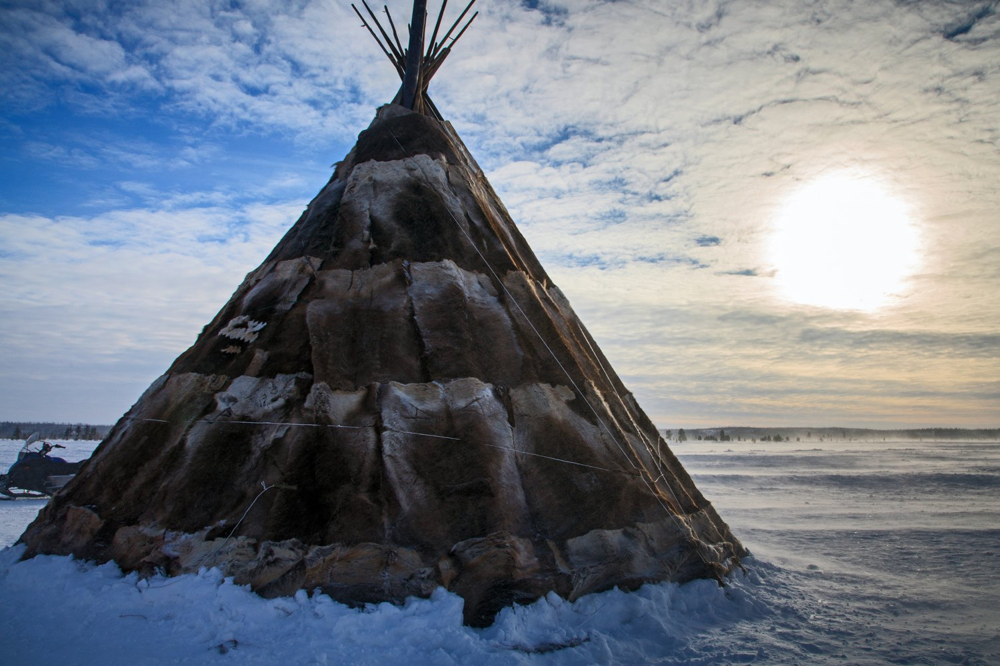

Жилище ненцев
Традиционным жилищем ненцев является чум – полукруглая палатка, обтянутая оленьей шкурой или специальной тканью. Чумы хорошо удерживают тепло, что особенно важно в условиях сурового сибирского климата.
В середине чума располагается очаг, который обеспечивает уютную атмосферу. В летний период ненцы могут использовать более лёгкие конструкции.
